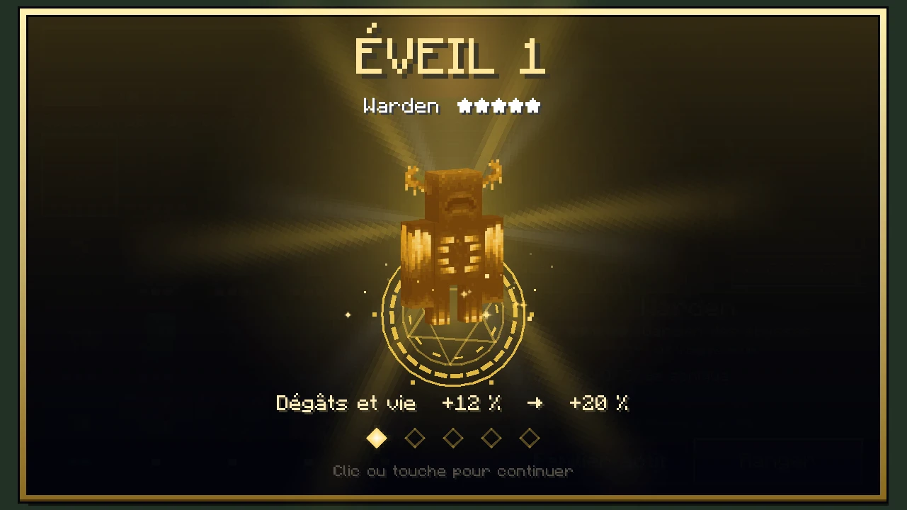
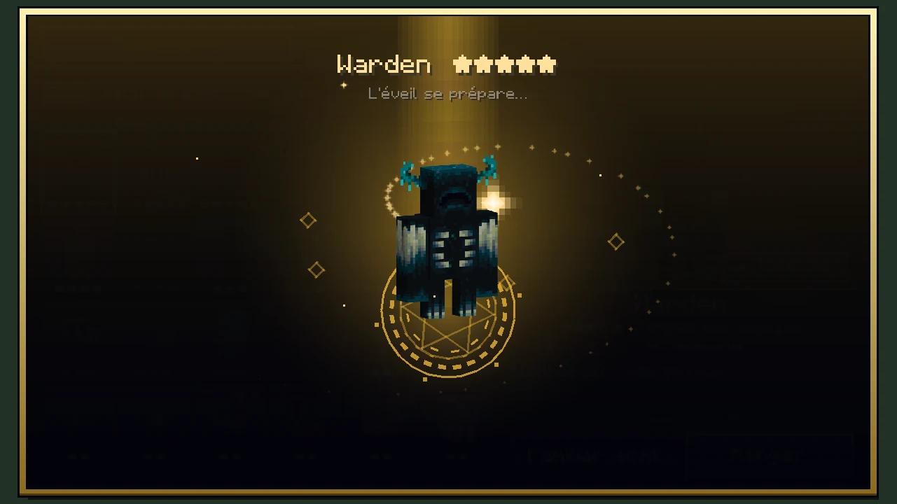
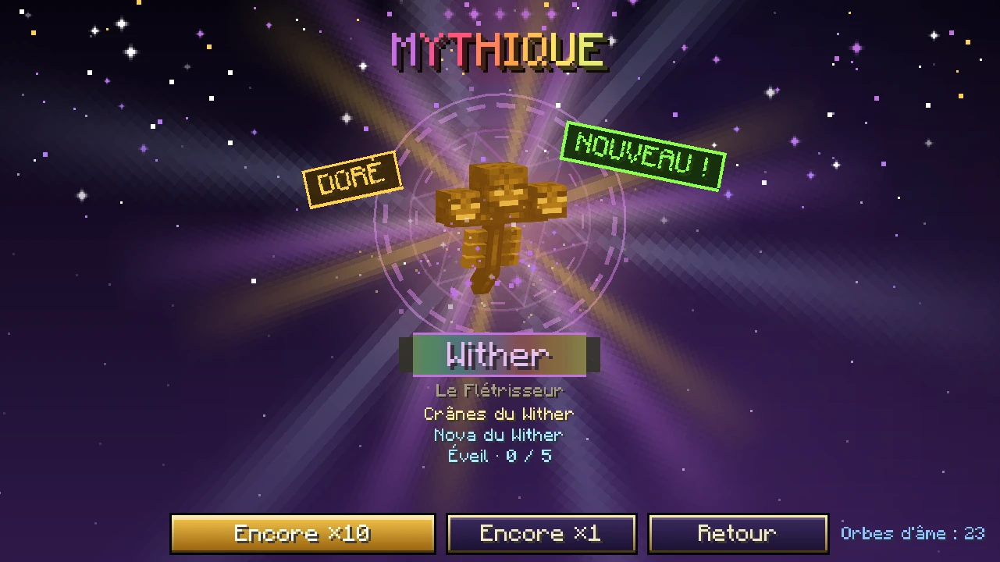
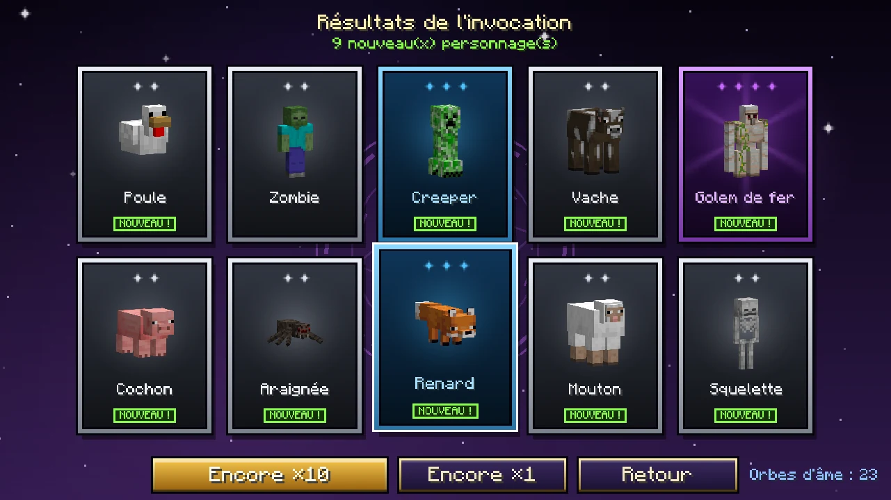
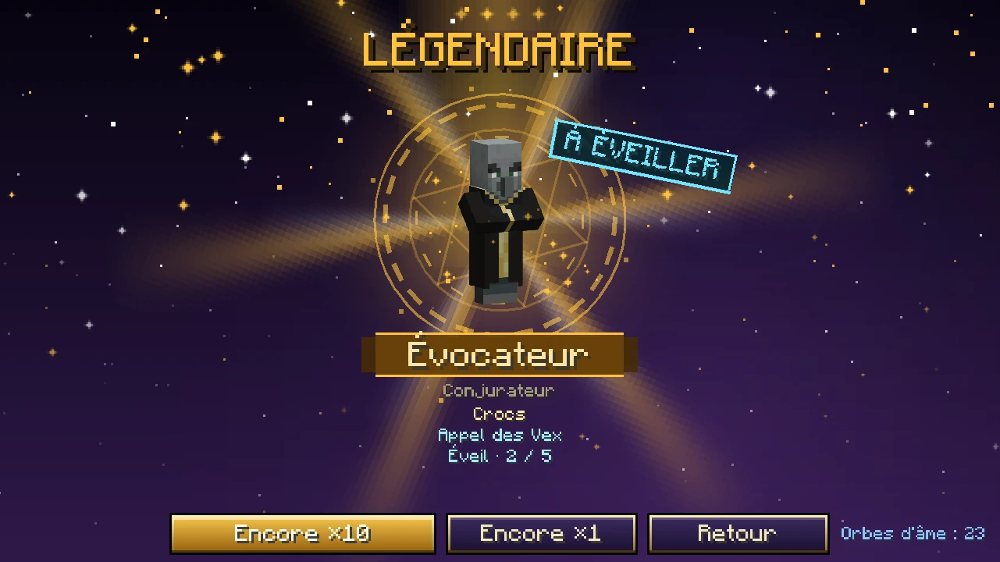
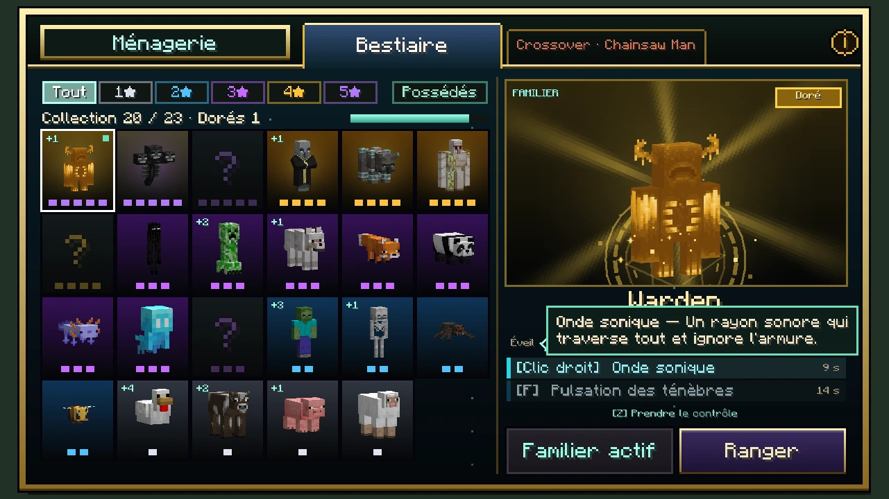
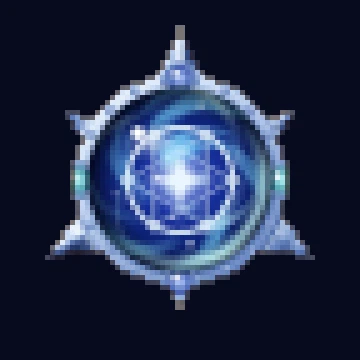

Familiers
Les familiers
Une troisième sorte de bannière, qui n'invoque pas des reliques mais des personnages : les créatures de Minecraft et celles d'Ebisu, 142 en tout, chacune telle qu'elle est — son modèle, ses sons, ses animations — de deux à cinq étoiles, et six pour un doré. Le personnage choisi vous suit partout en miniature, et d'une touche vous prenez sa place, à distance, à sa vraie taille, avec ses deux compétences.
 (agrandir l'image)
(agrandir l'image)

(agrandir l'image)

(agrandir l'image) (agrandir l'image)
(agrandir l'image)En miniature, il change d'allure (depuis la 0.34.1) : là où Minecraft dessine un petit de la créature, c'est ce petit qui vous suit — l'enfant villageois, le snifflet, le petit ghast, le poulain, l'ourson —, à la taille du familier ; les autres deviennent des chibis, la tête grossie de moitié. Certains ont une forme bien à eux : le poisson d'argent et l'endermite filent à moitié enterrés en soulevant la terre, le creeper vous suit chargé et le poisson-globe gonflé. Pris en main, chacun reprend sa vraie taille et ses vraies proportions.
La Ménagerie s'ouvre avec M. Toutes les touches du mod, familiers compris, sont rangées sous une seule catégorie Ebisu dans Options › Contrôles › Touches.
Fragments et orbes d'âme
Les bannières de personnages ont leur propre monnaie : l'orbe d'âme, une étoile d'argent bleuté à six branches autour d'une sphère cobalt où brûle une flamme d'âme. Il se fabrique avec 9 fragments d'âme, et chaque créature vanilla tuée par un joueur en laisse exactement un — passives comprises. Le coup d'un familier compte comme le vôtre, et une créature que vous avez frappée compte encore si elle meurt d'autre chose dans les 5 secondes. Ne comptent jamais : les créatures sorties d'un générateur de monstres, celles qu'un familier a appelées, et les familiers eux-mêmes.
d'âme
d'âme
d'âme
d'âme
d'âme
d'âme
d'âme
d'âme
d'âme
Les bannières de personnages
Dans la fenêtre d'invocation, elles sont toutes rangées sous un seul onglet, Familiers. Un interrupteur en haut de la bannière choisit entre le Bestiaire, les créatures du jeu et du mod, et le Crossover, les personnages venus d'ailleurs. La Ménagerie a le même partage : un onglet Bestiaire, un onglet par crossover.
| Étoiles | Chance par tirage | Personnages au Bestiaire |
|---|---|---|
| ● ★★★★★★ Divin (doré) | 0,1 % | tous, en or |
| ● ★★★★★ Légendaire | 1 % | 11 |
| ● ★★★★ Épique | 9 % | 27 |
| ● ★★★ Rare | 30 % | 53 |
| ● ★★ Commun | 60 % | 51 |
Les étoiles suivent les rangs des reliques, aux mêmes taux : un 2★ est un commun, un 5★ une légendaire, et un doré est le 6★, le divin — le rang des dieux. Il n'y a plus de 1★ : les anciens 1★ sont des 2★, avec leurs forces.
- Un tirage coûte un orbe d'âme, un ×10 en coûte dix. Comme partout ailleurs : aucune pitié, chaque taux est fixe.
- Le personnage de la semaine : un 5★ mis en avant tous les 7 jours de jeu, tiré au hasard parmi tous les 5★ de la bannière — jamais le même deux semaines de suite. Un 5★ tiré est la vedette à 25 %, puis 50 % après un raté, puis 100 % après deux. Deux 4★ de la semaine, tirés de la même façon, prennent 60 % des 4★.
- Doré, le 6★ divin : 0,1 % par tirage. Le tirage doré est décidé avant tout le reste : le personnage est alors tiré au hasard parmi tous ceux de la bannière, toutes étoiles confondues, et sort en or. L'orbe monte jusqu'à l'arc-en-ciel des dieux et l'écran s'éteint ; la carte se retourne, puis la créature se change en or dans un éclair et une pluie de paillettes. Tout le serveur l'apprend, et une colonne de lumière se dresse sur vous. Elle est dorée de la tête aux pieds, poussière d'or comprise, et 50 % plus forte. Un personnage doré est un personnage à part : l'avoir ne donne pas le personnage normal, et inversement. Il a sa propre carte dans la Ménagerie, juste après le normal, et ne s'éveille jamais.
- Éveil : un doublon n'est jamais perdu, il attend en réserve. C'est vous qui le dépensez, dans la Ménagerie : le bouton Éveiller lance le rite et donne un niveau d'éveil, jusqu'à 5 : +8 % de dégâts et de vie par niveau.
- La cérémonie est celle des reliques, à la mesure d'une créature : l'orbe grimpe de couleur en couleur, éclate, et la créature elle-même apparaît, en 3D, qui tourne sur elle-même. Un 5★ et un 6★ font tomber la foudre.
La Ménagerie
Ouverte avec M. Chaque bannière de personnages y a son onglet : à gauche la collection, chaque personnage possédé debout sur sa carte, les autres en ombre avec un point d'interrogation, des filtres par étoiles (de 2★ à 6★, le 6★ montrant les dorés), un filtre « Dorés » qui ne montre que vos dorés et un filtre « Possédés » — un filtre allumé se remplit de sa couleur ; à droite le personnage choisi, en grand et qui tourne, avec son surnom, ses étoiles, ses cinq losanges d'éveil, ses deux compétences (survolées, elles disent ce qu'elles font) et les boutons Choisir et Sortir / Ranger. Un seul familier actif à la fois.
L'éveil
Chaque doublon d'un personnage va dans sa réserve. Dans la Ménagerie, une carte qui a un éveil à donner porte un chevron doré qui bat, et la pastille « N à éveiller » en haut de la collection ne montre plus qu'eux. Choisissez-en un : la scène affiche sa réserve et un bouton Éveiller.
Le rite prend tout l'écran : la créature monte au centre d'un cercle qui tourne de plus en plus vite, la lumière converge vers elle en spirale, ses cinq gemmes d'éveil tournent autour, le cœur bat de plus en plus vite et l'écran tremble — puis tout éclate en blanc, des ondes de choc partent, et la nouvelle gemme vole se sertir dans la couronne des cinq, pendant que le bonus de dégâts et de vie compte jusqu'à sa nouvelle valeur. Le cinquième éveil est l'Éveil ultime, dans toutes les couleurs, sous une pluie d'arc-en-ciel. Un clic abrège le rite, un second le ferme.
Le familier qui vous suit
Votre familier actif vous suit comme un chien : il vous laisse vous éloigner de quelques blocs, vous rejoint du côté où il était, s'arrête à deux pas et vous regarde. Il ne tourne pas autour de vous quand vous tournez la tête. Il marche, vole ou nage, à la taille d'un animal de compagnie — d'autant plus grand que la créature l'est : un poisson d'argent grandit un peu pour qu'on le voie, un humain arrive à hauteur de hanche, un Warden ou un Ghast vous dépassent à peine. Il ne peut pas être blessé, personne ne s'en prend à lui, il ne déclenche ni ne casse rien, et il vous rejoint où que vous alliez — d'un monde à l'autre compris. Il n'existe que pendant que vous êtes connecté.
Prendre le contrôle
Touche Z : votre familier grandit jusqu'à sa vraie taille et vous le jouez vu de dos, par-dessus son épaule : la caméra est reculée, relevée et décalée à droite à la mesure de sa taille — plus loin pour un Ravageur que pour une poule —, si bien que la créature se tient en bas à gauche et que le viseur reste sur ce qui est devant elle. Votre vue d'avant revient quand vous rentrez. Votre corps reste immobile là où vous l'avez laissé. Il se joue comme votre personnage : c'est votre jeu qui le déplace, dans l'instant ; il accélère, freine, tombe, saute plus loin en courant et garde son élan en l'air comme vous ; la vue se balance avec ses pas et s'élargit quand il court. Maj l'accroupit : il avance pas à pas, la vue baisse, il ne tombe pas des bords. Il roule des épaules en marchant et se penche dans sa course.
Chaque coup se voit sur la créature elle-même : elle arme, se fend en tournant tout le corps dans le coup, d'un côté puis de l'autre, et un arc de lumière de sa couleur balaie l'air devant elle — étincelles enchantées en plus à partir de 4★. Chaque compétence est un petit spectacle : la créature se ramasse puis jaillit vers le haut, et une hélice de lumière monte autour d'elle pendant que des anneaux s'ouvrent au sol. Plus elle a d'étoiles, plus c'est grand : un éclair dès 3★, des traînées et des étincelles électriques à 4★, et à 5★ une tour de lumière, une onde de choc, des feux d'artifice et une pirouette complète. Un doré joue comme un 6★ : tout ce qu'a un 5★, plus une couronne de toutes les couleurs qui monte et s'ouvre au-dessus de lui, une spirale arc-en-ciel, une lame qui laisse un sillage de toutes les couleurs et une pluie de paillettes d'or.
Les créatures du mod jouent en plus leurs propres gestes : le Revenant de l'Astrelume frappe de son poing de cristal et lance la chaîne de son cœur, le Tyran fend et fait jaillir la lave, Astérion balaie et frappe le sol, le Cyclope abat son marteau, Cerbère hurle, l'Archer des cimes bande son arc et appelle les étoiles, le Paon d'Argus fait la roue, le Hérisson se met en boule… Ce ne sont que des gestes : seule la compétence fait effet.
Tout s'entend aussi. Chaque coup fend l'air — plus grave pour une grosse bête — et claque quand il touche, avec le craquement d'un coup critique dès 3★. Chaque compétence lâche son sort puis égrène un accord qui monte, une note par étoile : deux pour un commun, l'accord entier pour un 5★, qui y ajoute le tonnerre et des feux d'artifice ; un doré le double de cloches et y fait chanter une balise. Entrer dans une créature et revenir dans votre corps ont chacun leur souffle, une compétence de nouveau prête tinte doucement, et une compétence demandée trop tôt répond d'une note sourde.
Votre main, votre barre d'objets, vos cœurs et votre faim disparaissent : à leur place, ses cœurs (dorés s'il est en or), ses étoiles, une barre de trois cases — son coup et ses deux compétences, avec leurs touches et leur recharge — et le lien qui le relie à votre corps, en barre d'expérience. L'inventaire ne s'ouvre pas pendant ce temps.
| Touche | Ce qu'elle fait |
|---|---|
| ZQSD | Avancer, comme vous ; en vol et à la nage, regarder vers le haut ou le bas fait monter ou plonger |
| Espace / Maj | Sauter ; en vol et à la nage, monter et descendre |
| Ctrl | Courir |
| Clic gauche | Son attaque, à sa manière : un squelette tire, un wither-squelette flétrit, une araignée des mines empoisonne |
| Clic droit | Sa première compétence |
| F | Sa seconde compétence (à partir de trois étoiles) |
| Z | Revenir dans votre corps |
Une minute, toutes les cinq minutes
Depuis la 0.33, une prise de contrôle dure 1 minute au plus, et ne revient que toutes les 5 minutes, comptées depuis son début — quel que soit le familier, et même si vous rentrez plus tôt. À gauche de sa barre, une horloge décompte la minute avec un fil qui se vide ; les dix dernières secondes passent au rouge et font tic-tac, les cinq dernières rougissent les bords de l'écran, puis vous revenez dans votre corps. La Ménagerie et la petite étiquette en bas à droite montrent le temps qu'il reste avant la prochaine (« Prise de contrôle dans 3:42 »), avec une barre qui se remplit.
Le coup porte de corps à corps. Le clic gauche ne vise plus le long du regard de la créature, qui passait au-dessus d'une petite cible quand le familier était grand (un Golem de fer, un Warden) et n'atteignait jamais le centre d'un géant : il frappe le plus proche ennemi devant lui dont le corps est à portée, mesurée d'un corps à l'autre et plus longue pour une grande créature. Quatre crochets se referment autour du viseur quand un coup peut porter.
Un panneau en bas de l'écran montre sa vie, ses deux compétences et leur recharge, et le lien qui le relie à votre corps : au-delà de 96 blocs, il se rompt. Un coup reçu par votre corps vous y ramène aussitôt. Tous les personnages frappent aussi fort à étoiles égales — c'est la créature qui décide comment : la vie suit la sienne, avec un plancher par étoiles. Ses attaques de zone ne touchent que ce qui est hostile : une explosion dans votre ferme ne tue pas la ferme.
K.O.
Vaincu pendant que vous le contrôlez, un familier n'est jamais perdu, mais c'est fini pour la journée : il tombe K.O. et se repose jusqu'au lendemain (le même jour que les quotidiennes : il change au matin, et dormir fait passer au lendemain). D'ici là, il ne sort plus, même en miniature, et aucun familier ne peut être contrôlé ; vous pouvez toujours en choisir un autre pour qu'il vous suive. La Ménagerie l'affiche « Au repos ».
Toute la galerie 5 images de plus


(agrandir l'image)

(agrandir l'image)

(agrandir l'image)

(agrandir l'image)

(agrandir l'image)